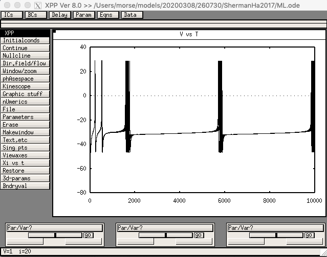

This is the readme for the models associated with the paper:
Sherman AS, Ha J (2017) How Adaptation Makes Low Firing Rates Robust. J Math Neurosci 7:4
doi:10.1186/s13408-017-0047-3
This xpp code was contributed by Artie Sherman.
The model is defined in ML.ode The version with a SNIC, corresponding
to Fig. 11 in the paper (Sherman & Ha 2017). is defined in
ML_SNIC.set. The version with a Hopf bifurcation, corresponding to
Fig. 12, is defined in ML_Hopf.set
A default run of the model with commands like
xppaut ML.ode
and then in the GUI clicking Initalconds -> Go
should display a figure like:
